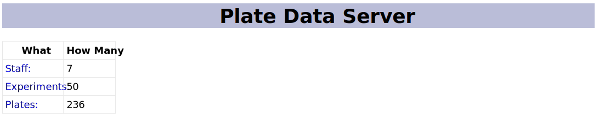

get_all to get all records (but not 1-1 with database records)
get_count to count records of a particular type
get_plate_filename to turn a plate ID into an assay filename
def get_count(kind):
"""How many entries of the given kind?"""
conn = sqlite3.connect(os.getenv("RSDX_DB_PATH"))
if kind == "staff":
result = conn.execute("select count(*) from staff").fetchone()
elif kind == "experiments":
result = conn.execute("select count(*) from experiment").fetchone()
elif kind == "plates":
result = conn.execute("select count(*) from plate").fetchone()
else:
assert False, f"Unknown kind {kind}"
conn.close()
return result[0]
Controller
Use [Flask][flask]
Define a function to handle a request to a particular URL
Use a decorator to route appropriate requests to it
app = Flask(__name__)
@app.route("/")
def index():
"""Display data server home page."""
page_data = {
"site_title": SITE_TITLE,
"num_staff": model.get_count("staff"),
"num_experiments": model.get_count("experiments"),
"num_plates": model.get_count("plates"),
}
return render_template("index.html", **page_data)
Run from the command line
RSDX_DB_PATH=../../data/assays.db flask --app server run
* Serving Flask app 'server'
* Debug mode: off
WARNING: This is a development server. Do not use it in a production deployment.
Use a production WSGI server instead.
* Running on http://127.0.0.1:5000
Press CTRL+C to quit
Go to port 5000

Home page of data server
Templates
render_template looks in the templates directory for index.html